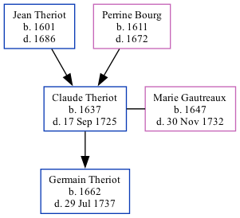

Claude Theriot 1637 - 1725
[ Home ] | [ Calendar ] | [ Surnames Index ] | [ Family History ]The child of Jean Theriot and Perrine Bourg, Claude Theriot, the 9 times great-grandfather of Michele Copp (née Phillips), was born in Port Royal, Acadia, Nova Scotia, Canada in 16371 and married Marie Gautreaux (with whom he had 1 child, Germain) in Ns in 16611.
He died in Port Royal on Sep 17, 1725.
Parents
- Jean was born in 1601
- Perrine was born in 1611
Children
- Germain was born in 1662
Citations
- U.S. and International Marriage Records, 1560-1900 Online publication - Provo, UT, USA: The Generations Network, Inc., 2004.Original data - This unique collection of records was extracted from a variety of sources including family group sheets and electronic databases. Originally, the information was deriv
Family Tree
Generated by ged2site. Last updated on Sep 18, 2024